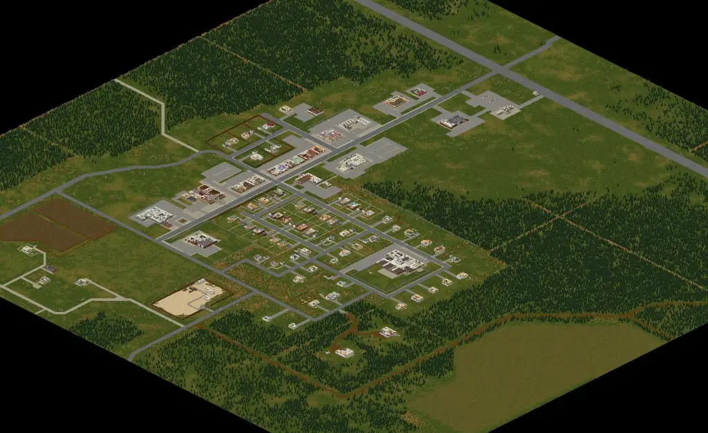
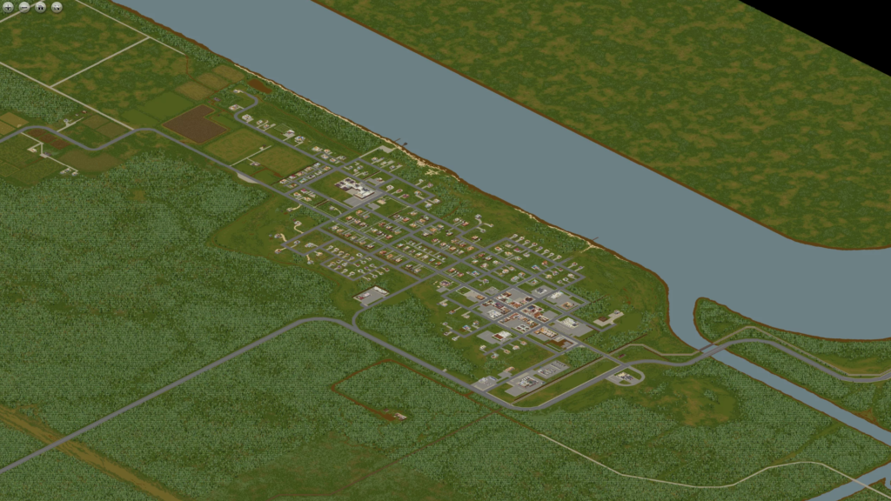
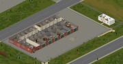

Maps
There are 4 spawn points in the game, all in towns except Louiville, which is the biggest city and basically impossible to survive in. The four towns in the game are Rosewood, Riverside, Westpoint, and Muldraugh. The world map of the game is based on real-life Kentucky.
Comparison of Real-life Kentucky and In-game Map
Look at the Ohio River; there are many similarities between the two.
Rosewood
Rosewood is a small town located in the southern area of Knox County and has the lowest zombie population of the four spawn towns. However, it has far less loot than Riverside, with a much smaller shopping district. This is contrasted by a large number of wealthy two-story houses that almost always have a detached garage. It can be quite a drive from other towns, with only Muldraugh and March Ridge being close by. This makes Rosewood harder to survive in than Riverside, but much easier than Muldraugh or West Point.
Some high-value locations in Rosewood include the Rosewood Fire Department, the police station across the street from the fire station, and the gated community at the north of the town.
Riverside
Riverside is available as a starting location and is situated next to the Ohio River, making it a great area for players who want an adequate water supply and/or fish regularly. Some points of interest in Riverside include a small police station, a hotel, a school, a hardware store, a large gated community, and various other businesses. It is the westernmost town on the map. Getting to West Point from Riverside is easy; simply follow the road east along the river. Other towns such as Rosewood can be quite a drive away.
Westpoint
West Point is a town in the state of Kentucky, in an area known as Knox County, based on the real-life West Point, KY. West Point is located south of the Ohio River, north of Muldraugh, east of Riverside, and south of Louisville.
West Point is the easternmost spawn town, with Louisville only a short drive away. However, it is one of the most dangerous areas in all of Knox County. This is due to a large population of zombies spread throughout the town, combined with a relative scarcity of weapons and large open areas.
West Point is considered one of the hardest places to survive in all of Knox County. Large amounts of zombies can be found practically everywhere, which can be a huge problem in the suburbs due to the lack of reliable spawns for high-quality weapons, even more so if players choose this town as their spawn town.
West Point excels in firearms. There are several areas where they can reliably spawn, and ammo is often abundant. Some key points of interest in West Point are the police station, the hardware store, the gun store, the factory, and the American Tire location.
Muldraugh
Muldraugh is a low wealth and low-income town, with much of its infrastructure noticeably old and in poor shape. Many of its shops have been abandoned and cleared out prior to the Knox Event, with many stores being for sale or lease. Many residents lived below the poverty line, relying on Muldraugh's soup kitchen on Dixie Hwy and the large number of mobile homes for shelter.
Muldraugh is an overall medium difficulty town, being more difficult to survive in than Rosewood or Riverside, but far easier than West Point. There is a sizable zombie population compared to most other towns; however, the abundance of weapons and high-value loot, as well as the tendency of most of the zombie population to cluster around a few key areas, make the high number of zombies less of a problem. Some key looting areas include the large number of self-storage lots and the police station.
Louisville
Louisville, the biggest city in the game, is home to many of Knox County's largest corporations. This includes food chains Spiffo's and Jay's Chicken, fuel giants Fossoil and Gas 2 Go, and media companies such as LBMW and KnoxTalk Radio.
The outbreak of the Knox Event on July 6th brought swift military intervention. In anticipation of the impending crisis, the US Military began erecting fences and setting up fortified border posts, sealing off the city and establishing the Knox Exclusion Zone. By July 9th (the game's default start date), accessing Louisville became nearly impossible, save for a few guarded checkpoints. The city was quarantined due to the threat of the Knox Infection. The situation deteriorated rapidly after the night of July 14th, and by July 16th, Louisville was completely overwhelmed by the Knox Infection.
March Ridge
March Ridge is a region found northeast of Muldraugh and northwest of Rosewood. It features a small suburban area, most notable for its scenic views, scenic railway, and lack of zombie presence. The area's residents were known for their strong ties to the community and their heavy reliance on homegrown goods.
March Ridge is a great area for players to build bases as it features an abundance of farmland and a lack of zombies. However, it lacks high-value loot.

Other Places
While the major spawn locations are most commonly known, many small outlying areas and towns feature within the map that can be used as points of interest.
Military reasearch facility
The main building of the facility contains one story. The main floor largely consists of several offices, lounges, and storage rooms. There is also an infirmary and what appear to be parts of a laboratory. In the smaller building, there is a storage room and a stairwell that leads up to another office. A dysfunctional elevator can also be found in the southern wing, although there isn't a second floor above the elevator. This strongly implies that there is an underground level to the facility, which might be added with the new basement feature coming in build 42.
The building itself does not contain much loot, as it is mostly composed of offices alongside research rooms filled with the usual office and medical loot. In the back, there is a guard armory with four military lockers that can spawn guns and some ammo boxes. There is also a smaller armory with two normal lockers in the front of the building which contains handgun loot. For Its difficulty to reach and the sheer amount of zombies, the loot is very bad. The loot is less than that of a gun shop or a police station. The only good thing that is guaranteed from a visit to the facility are military backpacks due to the large amount of soldier zombies in the area.

Military Checkpoint
"This is Jackie Jaye. It's been the night from hell at the Louisville border camp. Violence between the military and civilian groups broke out, and it attracted them. Hundreds of people with the Knox Event Infection, maybe more, maybe thousands. They came in through the wire, through the barricades."Jackie Jaye, LBMW
The camp was overrun on July 14th after a protest resulted in a conflict between the army and protesters, which resulted in large hordes of zombies raiding the border camp and the rest of Louisville. The refugee camp was for survivors who were displaced by the Knox Event quarantine.
Prison
The prison is one of the most dangerous places in Knox Country. The facility has a massive zombie population, and the cramped rooms and hallways make it rather difficult for survivors to maneuver past hordes inside the prison. The vast majority of the zombie population at the prison are the former guards and inmates.
Kentucky State Prison is mentioned on a Music CD Rosewood Prison and a VHS Home Dating Agency (Male). the first reveals to us that the prison is already a "little" old, existing since the 70s (this CD does not reveal the date of construction of the Prison, it only reveals that it already existed in the 70s) and the second we meet one of the poor employees who worked in this prison and who was likely in it during day 0 of the Knox Event in rural Knox Country. An ironic line from the Rosewood prison song is, "Rosewood can go straight to hell..., because 2 and a half decades later she actually went to hell, BECOMING ONE"